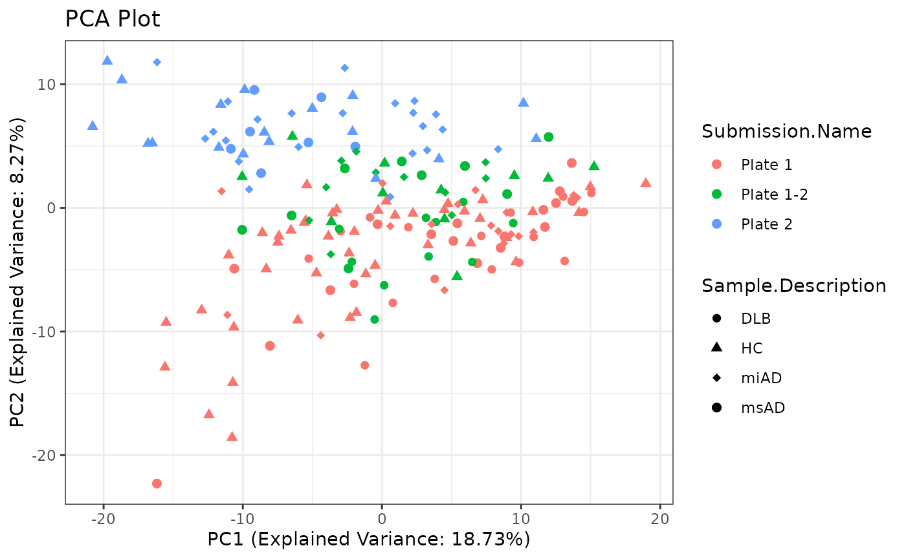

Data Processing Phase 1 Report
Source:vignettes/dataProcessing_phase_1.Rmd
dataProcessing_phase_1.RmdIntroduction
This report outlines the data processing steps involved in phase 1. It covers various preprocessing tasks such as reformatting material names, adding missing phenotype data, selecting metadata, deduplication, imputation of missing values, and performing principal component analysis (PCA).
Setup
In this section, we set up the necessary libraries and configurations for the data processing tasks.
Data Loading
We start by loading the raw data from an Excel file containing normalized data. This data will be used for subsequent preprocessing steps.
# Read the Excel file containing normalized data
data <- read.table("../inst/extdata/allbatches_uM_clean.txt",
sep = "\t", header = TRUE)Reformatting Material Names
To ensure consistency and clarity in the material names, I perform reformatting of material names. This step involves mapping specific material names to standardized formats.
Processing Sample.Identification
I perform then reformatting of Sample names. This step involves mapping s pecific sample names to standardized formats.
Adding Missing Phenotype Data
Phenotype data is essential for downstream analysis. In this step, I add missing phenotype data to the main dataset by merging it with additional information from external sources.
I developed a function ad-hoc
dataPreparation::add_missing_phenotypes
# Load additional phenotype information
all_samples_info <-
data.table::fread(input = "../inst/extdata/additional_info.tsv",
sep = "\t") |>
as.data.frame()
colnames(all_samples_info) <- gsub(pattern = " ",
replacement = ".",
x = colnames(all_samples_info))
head(all_samples_info)
#> Patient.reference Phenotype Gender Age Plasma-LH Serum Plasma-LH
#> 1 ADIA03FR120087 miAD Male 74 F1916088 F1916087 F1916088001
#> 2 ADIA03CH090047 miAD Male 83 F1915909
#> 3 ADIA03CH090046 miAD Male 81 F1915905 F1915904 F1915905001
#> 4 ADIA03CH090045 msAD Female 78 F1915900 F1915899 F1915900001
#> 5 ADIA03CH090044 miAD Male 76 F1915894
#> 6 ADIA03CH090043 miAD Female 67 F1915889
#> Serum Serum Serum
#> 1 F1916087001 F1916087012
#> 2 F1915909012
#> 3 F1915904001 F1915904012
#> 4 F1915899001 F1915899010
#> 5 F1915894011
#> 6 F1915889012
# Add missing phenotype information
data <- dataPreparation::add_missing_phenotypes(data, all_samples_info)
data <- data |>
dplyr::relocate(Gender,
Age,
.before = Sample.Description)Selecting Metadata
Metadata selection involves choosing relevant columns from the dataset that provide information about each sample. These metadata columns are crucial for sample identification and downstream analysis.
# Select metadata
allmetadata <- data[,c("Sample.Identification",
"Sample.Type",
"Sample.Description",
"Gender",
"Age",
"Material")]
allmetadata <- unique(allmetadata)
# Filter metadata for samples
allmetadata <- allmetadata %>%
filter(Sample.Type == "Sample")
# Filter data for samples
data <- data %>%
filter(Sample.Type == "Sample")
# Remove temporary objects
rm(list = setdiff(ls(), c("allmetadata",
"data",
"add_missing_phenotypes",
"fncols",
"all_samples_info")))
data %>%
head() %>%
tibble::as.tibble()
#> Warning: `as.tibble()` was deprecated in tibble 2.0.0.
#> ℹ Please use `as_tibble()` instead.
#> ℹ The signature and semantics have changed, see `?as_tibble`.
#> This warning is displayed once every 8 hours.
#> Call `lifecycle::last_lifecycle_warnings()` to see where this warning was
#> generated.
#> # A tibble: 6 × 416
#> Sample.Type Sample.Identification Gender Age Sample.Description
#> <chr> <chr> <chr> <int> <chr>
#> 1 Sample F1800067 Female 93 DLB
#> 2 Sample F1701006 Male 68 DLB
#> 3 Sample F1915899 Female 78 msAD
#> 4 Sample F1912538 Male 63 msAD
#> 5 Sample F1815069 Male 83 miAD
#> 6 Sample F1705317 Female 78 miAD
#> # ℹ 411 more variables: Submission.Name <chr>, Material <chr>, AC.0.0. <dbl>,
#> # AC.2.0. <dbl>, AC.3.0. <dbl>, AC.3.0.DC. <dbl>, AC.3.0.OH. <dbl>,
#> # AC.3.1. <dbl>, AC.4.0. <dbl>, AC.4.0.DC. <dbl>, AC.4.0.OH. <dbl>,
#> # AC.4.1. <dbl>, AC.4.1.DC. <dbl>, AC.5.0. <dbl>, AC.5.0.DC. <dbl>,
#> # AC.5.0.OH. <dbl>, AC.5.1. <dbl>, AC.5.1.DC. <dbl>, AC.6.0. <dbl>,
#> # AC.6.0.DC. <dbl>, AC.6.0.OH. <dbl>, AC.6.1. <dbl>, AC.7.0. <dbl>,
#> # AC.7.0.DC. <dbl>, AC.8.0. <dbl>, AC.8.1. <dbl>, AC.8.1.OH. <dbl>, …Writing Metadata and Data
After selecting the metadata and preparing the dataset, I write the metadata and cleaned data into separate CSV files for future reference and analysis.
# Write metadata to a CSV file
write.table(allmetadata, file = "../inst/data_to_use/all_metadata.csv", row.names = FALSE, sep = ",")
# Write data to a CSV file
write.table(data, file = "../inst/data_to_use/all_batches.csv", sep = ",", row.names = FALSE, col.names = TRUE, quote = FALSE)Deduplication
Deduplication is necessary to handle cases where multiple entries for the same sample exist. I aggregate duplicated rows by calculating the mean of numeric columns and assigning a common submission name.
# Use the aggregate function to calculate the mean for duplicated rows
# Merge the data by taking the mean of numeric columns and assigning the Submission.Name as "Plate 1-2"
df_deduplicated <- data %>%
group_by(Sample.Identification) %>%
summarize(across(where(is.numeric), mean),
Submission.Name = if_else(n() > 1, "Plate 1-2", Submission.Name[1]),
Sample.Description = Sample.Description[1],
Material = Material[1],
Sample.Type = Sample.Type[1],
Gender = Gender[1]) %>%
ungroup()
df_deduplicated <- df_deduplicated %>% relocate(Sample.Type,
Sample.Description,
Gender,
Age,
Material,
Submission.Name,
.after = Sample.Identification)
meta_deduplicated <- unique(allmetadata)
# Merge metadata and raw_data using a common key
combined_data <- df_deduplicated
# Remove temporary objects
rm(list = setdiff(
ls(),
c(
"allmetadata",
"data",
"add_missing_phenotypes",
"fncols",
"combined_data"
)
))Adding Cohort Information
Cohort information provides context about the sample population. Here, I add cohort information based on the sample description, distinguishing between different cohorts.
combined_data$Cohort <- NA
combined_data[grepl(pattern = "AD",
substr(
combined_data$Sample.Description,
start = 3,
stop = 5
)), ]$Cohort <- "AD"
combined_data[!grepl(pattern = "AD",
substr(
combined_data$Sample.Description,
start = 3,
stop = 5
)), ]$Cohort <-
combined_data[!grepl(pattern = "AD",
substr(
combined_data$Sample.Description,
start = 3,
stop = 5
)), ]$Sample.Description
combined_data <- combined_data %>%
relocate(Cohort, .after = Sample.Description)
colnames(combined_data)[1] <- "sampleID"
colnames(combined_data)[4] <- "Allgr"Writing Combined Data
After deduplication and cohort assignment, I write the combined and processed data into a CSV file for further analysis.
# write.csv(x = combined_data, file = "../inst/data_to_use/CLEAN_combined_data_allbatches.csv", row.names = FALSE)Preprocessing Data
In this step, I preprocess the data by removing columns with high missingness and imputing missing values using the k-nearest neighbors (knn) algorithm.
I developed a function ad-hoc
dataPreparation::remove_high_missingness
# Select the raw data
data <- combined_data %>%
dplyr::select(-c(1:8))
# Remove rows with high missingness and impute missing values with k-nearest neighbors (knn)
elaborated_data <- dataPreparation::remove_high_missingness(data)
#> Columns removed due to more than 10 % missing values:
#> AC.4.0. : 14.59459 % missing
#> AC.4.0.DC. : 12.97297 % missing
#> AC.4.1. : 14.59459 % missing
#> AC.4.1.DC. : 12.97297 % missing
#> AC.5.0.DC. : 12.97297 % missing
#> AC.5.0.OH. : 12.97297 % missing
#> AC.5.1.DC. : 12.97297 % missing
#> AC.6.0. : 12.97297 % missing
#> AC.6.0.DC. : 12.97297 % missing
#> AC.6.1. : 12.97297 % missing
#> AC.7.0. : 12.97297 % missing
#> Ile : 25.40541 % missing
#> xLeu : 41.08108 % missing
#> PEA : 25.94595 % missing
#>
#> Rows removed due to more than 10 % missing values:
#> Row 153 : 79.4621 % missing
#>
#> Columns removed due to having 0 variance:
#> Carnosine
#> LPC.9.0.
#> PC.30.2.
#> PC.O.31.1.
#> PC.O.33.4.
#> PC.O.38.1.
#> PC.O.44.3.
imputed_data <- elaborated_data$cleaned_data %>%
as.matrix() %>%
impute::impute.knn()
# Select categories
categories <- combined_data %>%
dplyr::slice(-(elaborated_data$row_missing_percent)) %>%
dplyr::select(Sample.Description, Submission.Name)
# Add categories to imputed data
imputed_data$categories <- categories
# Remove temporary objects
rm(list = setdiff(
ls(),
c(
"allmetadata",
"data",
"add_missing_phenotypes",
"fncols",
"combined_data",
"elaborated_data",
"imputed_data",
"remove_high_missingness"
)
))Writing imputed data
Here, I save data where rows with high missingness were removed and impute missing values with k-nearest neighbors (knn).
write.csv(x = combined_data, file = "../inst/data_to_use/imputed_data_allbatches.csv", row.names = FALSE)
usethis::use_data(imputed_data, overwrite = TRUE)
#> ✔ Setting active project to 'C:/08_pkgs/dataPreparation'
#> ✔ Saving 'imputed_data' to 'data/imputed_data.rda'
#> • Document your data (see 'https://r-pkgs.org/data.html')Performing Principal Component Analysis (PCA)
Principal Component Analysis (PCA) is a dimensionality reduction technique that helps visualize the variation in the dataset. Here, I perform PCA on the preprocessed data and create a PCA plot for visualization.
# Perform PCA
pca_result <- prcomp(imputed_data$data, scale. = TRUE, center = TRUE)
# Extract PCA scores
pca_scores <- as.data.frame(pca_result$x)
# Combine PCA scores with categories for visualization
pca_data <- cbind(pca_scores, imputed_data$categories)
# Create PCA plot
pca_plot <- ggplot2::ggplot(pca_data,
ggplot2::aes(x = PC1, y = PC2,
color = Submission.Name,
shape = Sample.Description)) +
ggplot2::geom_point(size = 2) +
ggplot2::scale_shape_manual(values = c(16, 17, 18, 19)) +
ggplot2::theme_bw() +
ggplot2::labs(
title = "PCA Plot",
x = paste0(
"PC1 (Explained Variance: ",
round(pca_result$sdev[1] ^ 2 / sum(pca_result$sdev ^ 2) * 100, 2),
"%)"
),
y = paste0(
"PC2 (Explained Variance: ",
round(pca_result$sdev[2] ^ 2 / sum(pca_result$sdev ^ 2) * 100, 2),
"%)"
)
)
# Display PCA plot
pca_plot